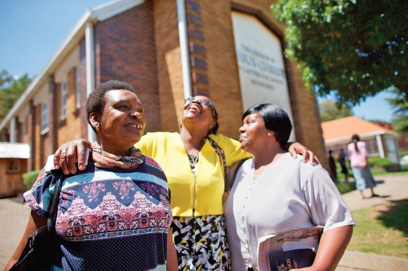

Alma 37:6
By small and simple things are great things brought to pass
Throughout the scriptures, God shows that small actions done consistently can lead to great blessings and powerful outcomes
Alma the Younger spoke to his son Helaman and gave him responsibility over the sacred records and important items that had been passed down through generations.
Alma reminded Helaman about the Liahona, a special compass that guided their ancestors through the wilderness. It only worked when the people had faith and followed God’s instructions.
The Liahona didn’t instantly take them to the promised land. Instead, it helped them move forward little by little each day. When they were faithful in small things, it kept guiding them.
Alma taught Helaman the principle that God often accomplishes great things through small and simple actions, saying that “by small and simple things are great things brought to pass.”
Applying the Principle
Scripture Study
Simple habits like scripture study may seem insignificant, but over time they strengthen faith greatly.
Pray Often
Praying often strengthens your faith and relationship with Heavenly Father.

Serving Others
Small acts of kindness can have a powerful impact on the life of the receiver and the giver.